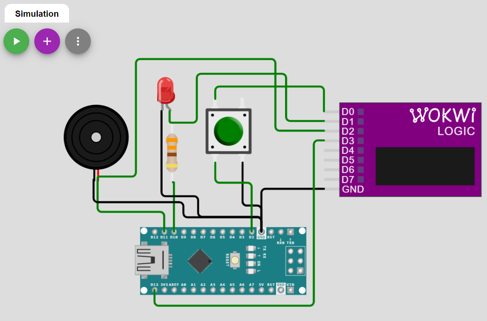

Arduino-FreeRTOS for AVR (Part 5)#
ถัดจากบทความตอนที่แล้ว (ตอนที่ 1 | 2 | 3 | 4) บทความนี้เป็นตอนที่ 5 และนำเสนอเนื้อหาเกี่ยวกับวิธีการประสานเวลา หรือ "ซิงโครไนซ์" ในการทำงานระหว่างทาสก์ (Task Synchronization) โดยใช้คำสั่งของ FreeRTOS เช่น การใช้สิ่งที่เรียกว่า "เซมาฟอร์" (Semaphores) และการส่งสัญญาณไปยังทาสก์ (Task Notifications)
Keywords: Arduino, 8-bit AVR MCU, FreeRTOS, Wokwi AVR Simulator
▷ การประสานเวลาและสื่อสารกันระหว่างทาสก์#
โดยทั่วไปแล้ว RTOS จะมีคำสั่งต่าง ๆ ไว้เพื่อใช้ในการประสานเวลาและการส่งต่อข้อมูลกันระหว่างฟังก์ชันการทำงานของทาสก์ (Inter-Task Synchronization & Communication) และรวมถึงการทำงานของฟังก์ชันที่เป็น ISR (Interrupt Service Routine) ด้วย
- การประสานเวลา (Synchronization) เช่น ทาสก์หนึ่งรอเหตุการณ์หรือสัญญาณจากอีกทาสก์หนึ่ง หรือรอต่อคิวการใช้ทรัพยากรร่วมกัน
ซึ่งมีหลายวิธีให้เลือกทำได้ เช่น
- "เซมาฟอร์" (Semaphores)
- "มิวเทค" (Mutex = Mutual Exclusion)
- "บิตเหตุการณ์" (Event Bits หรือ Event Flags) หากรวมกันเป็นกลุ่ม ก็เรียกว่า กลุ่มของบิตเหตุการณ์ (Event Groups)
- "การส่งสัญญาณไปยังทาสก์" (Task Notification) เป็นต้น
- การสื่อสารด้วยข้อมูล (Communication) เช่น ทาสก์หนึ่งรอข้อมูลจากอีกทาสก์หนึ่ง โดยอาศัยรูปแบบของหน่วยความจำที่เรียกว่า "คิวข้อความ" (Message Queues / FIFOs) และ "กล่องจดหมาย" (Mailboxes) เป็นต้น
ในปัจจุบันก็มีตัวเลือกสำหรับซอฟต์แวร์ในประเภท RTOS อยู่หลายรายการ และแต่ละตัวเลือกก็มีคำสั่งที่เกี่ยวข้องกับการประสานเวลาและการสื่อสารด้วยข้อมูลระหว่างทาสก์ แตกต่างกันไปบ้าง
▷ หลักการทำงานของเซมาฟอร์ (Semaphores)#
เซมาฟอร์แบ่งออกได้เป็นสองประเภทคือ
- เซมาฟอร์แบบไบนารี (Binary Semaphores) ซึ่งสามารถใช้ได้สำหรับการประสานเวลาระหว่างทาสก์โดยทั่วไป และ (ในบางกรณี) การบังคับให้มีลำดับการทำงานของทาสก์ เมื่อมีการใช้ทรัพยากรร่วมกัน (Shared Resources) โดยให้เข้ามาใช้ได้ทีละทาสก์เท่านั้นและกันทาสก์อื่นไม่ให้เข้ามาแทรก (Mutual Exclusion)
- เซมาฟอร์ตัวนับ (Counting Semaphores)
เราอาจมองว่าเซมาฟอร์แบบไบนารีเป็นกรณีหนึ่งของเซมาฟอร์ตัวนับ กล่าวคือ เซมาฟอร์แบบไบนารีมีค่าสูงสุดได้ไม่เกิน 1 แต่เซมาฟอร์ตัวนับสามารถมีค่าสูงสุดได้มากกว่าหนึ่ง
การทำงานของเซมาฟอร์ อาจเปรียบเทียบได้กับกล่องที่มีโทเคน (Token) จำนวนจำกัด เช่น ถ้ามีความจุเท่ากับ 1 ก็จะเป็นแบบไบนารี (คือ มีจำนวนเป็น 0 หรือ 1 เท่านั้น) ทาสก์จะต้องขอโทเคนที่มีอยู่ในเซมาฟอร์มาใช้ และได้ครั้งละหนึ่ง หากจำนวนโทเคนลดลงเหลือเป็น 0 ในขณะนั้น ทาสก์ดังกล่าวจะต้องหยุดรอ ซึ่งหมายถึง การเปลี่ยนสถานะจาก RUNNING ไปเป็น BLOCKED และรอไปจนกว่า จะมีการนำโทเคนกลับมาใส่คืน
เมื่อมีโทเคนถูกนำกลับมาใส่เพิ่ม ทาสก์ที่ถูกหยุดรออยู่นั้น จะถูกเปลี่ยนเป็นสถานะ READY และ RUNNING ตามลำดับ เมื่อได้ทำงาน ก็จะต้องตรวจสอบดูอีกครั้งว่า จะขอโทเคนได้หรือไม่ ถ้าขอได้ ก็จะได้ทำงานต่อไป
การนำโทเคนกลับมาคืน จะไม่ทำให้ทาสก์ต้องหยุดรอ แต่หากมีการนำโทเคนกลับมาใส่จนครบแล้วตามความจุ จำนวนของโทเคนจะไม่เพิ่มขึ้นเกินกว่าความจุ (ค่าสูงสุด)
FreeRTOS API มีคำสั่งที่เกี่ยวข้องกับการใช้งาน Semaphores ยกมาเป็นตัวอย่างดังนี้
xSemaphoreCreateBinary()สร้างเซมาฟอร์แบบไบนารีxSemaphoreCreateBinaryStatic()สร้างเซมาฟอร์แบบไบนารี และใช้ตลอดไป ไม่มีการยกเลิกการใช้งานxSemaphoreCreateCounting()สร้างเซมาฟอร์แบบตัวนับxSemaphoreCreateCountingStatic()สร้างเซมาฟอร์แบบตัวนับ และใช้ตลอดไป ไม่มีการยกเลิกการใช้งานvSemaphoreDelete()เมื่อต้องการเลิกใช้งานเซมาฟอร์ที่ถูกสร้างขึ้นมาxSemaphoreTake()ขอใช้เซมาฟอร์ และกำหนดเวลา Timeout ในการรอได้ (นับตามจำนวน OS Ticks หรือจะให้รอแบบไม่มีระยะเวลาจำกัด ให้ใช้ค่าเป็นportMAX_DELAY)xSemaphoreTakeFromISR()ขอใช้เซมาฟอร์ โดยเรียกใช้จาก ISRxSemaphoreGive()ขอคืนเซมาฟอร์xSemaphoreGiveFromISR()ขอคืนเซมาฟอร์ โดยเรียกใช้จาก ISRuxSemaphoreGetCount()ตรวจสอบค่าของเซมาฟอร์ที่เหลืออยู่ในขณะนั้น
ตัวอย่างรูปแบบของฟังก์ชันสำหรับขอใช้และขอคืนเซมาฟอร์ เช่น
BaseType_t xSemaphoreTake( SemaphoreHandle_t xSemaphore,
TickType_t xTicksToWait );
BaseType_t xSemaphoreGive( SemaphoreHandle_t xSemaphore );
ทั้งสองฟังก์ชันนี้จะให้ค่ากลับคืนมาเป็น pdTRUE หรือ pdFALSE
▷ ตัวอย่างที่ 1: การใช้งาน Binary Semaphore#
ตัวอย่างแรกสาธิตการสร้างและใช้งานเซมาฟอร์แบบไบนารีและมีค่าเริ่มต้นเป็น 1 (Initial Count) เพื่อใช้ในการประสานเวลาการทำงานของทาสก์ T1 และ T2 ทั้งสองทาสก์จะทำหน้าที่สลับสถานะลอจิกที่ขาเอาต์พุตของแต่ละทาสก์ตามที่กำหนดไว้ (ขา D11 และ D12 ตามลำดับ)
ก่อนที่จะสลับสถานะลอจิกที่ขาเอาต์พุตในแต่ละครั้ง ทาสก์จะต้องพยายามเข้าถึงเซมาฟอร์ให้ได้ก่อน โดยใช้คำสั่ง xSemaphoreTake(...)
ถ้าไม่สามารถขอใช้เซมาฟอร์ได้ (เนื่องจากค่าของเซมาฟอร์ในขณะนั้นเป็น 0) ทาสก์จะต้องหยุดรอและถูกเปลี่ยนสถานะเป็น BLOCKED
ให้รอไปจนกว่าจะมีโอกาสได้เข้าใช้งานอีกครั้ง
แต่ถ้าเข้าถึงเซมาฟอร์ได้แล้ว จะทำให้ค่าของเซมาฟอร์ลดลงจาก 1 เป็น 0
แล้วทาสก์จึงสลับค่าลอจิกที่ขาเอาต์พุต ตามด้วยคำสั่ง vTaskDelay(1)
ซึ่งจะทำให้ทาสก์หยุดรอเป็นเวลาเท่ากับ 1 OS Tick
จากนั้นจึงทำคำสั่ง xSemaphoreGive(...)
เพื่อทำให้ค่าของเซมาฟอร์เปลี่ยนจาก 0 กลายเป็น 1 และตามด้วยคำสั่ง
taskYIELD() คำสั่งสุดท้ายนี้จะทำให้อีกทาสก์หนึ่งได้มีโอกาสทำงานในลำดับถัดไปทันที
ถ้าทาสก์ T1 ขอใช้เซมาฟอร์ได้ก่อน ทาสก์ T2 จะได้ใช้เซมาฟอร์ในลำดับถัดไป
หลังจากที่ T1 ได้นำกลับมาคืน และสลับกันไป เนื่องจากทั้งสองทาสก์
มีระดับความสำคัญเท่ากัน และมีการใช้คำสั่ง taskYIELD() หลังจากทำคำสั่ง xSemaphoreGive(...)
#include <Arduino_FreeRTOS.h>
#include "task.h"
#include "semphr.h"
const int LED_PINS[] = {11, 12};
// a binary semaphore
SemaphoreHandle_t xSemaphore = NULL;
void setup() {
// create a binary semaphore (with the capacity of 1)
// and 1 as initial count
xSemaphore = xSemaphoreCreateCounting( 1, 1 );
// create two tasks "T1" and "T2"
xTaskCreate( led_task, "T1", 128, (void*)0, 1, NULL );
xTaskCreate( led_task, "T2", 128, (void*)1, 1, NULL );
}
void led_task( void *pvParameters ) {
int pin = LED_PINS[ (int)pvParameters ];
pinMode( pin, OUTPUT );
while(1) {
// try to take the semaphore without timeout
if ( xSemaphoreTake(xSemaphore, portMAX_DELAY)==pdTRUE ) {
// toggle the LED output
digitalWrite( pin, !digitalRead(pin) );
vTaskDelay( 1 /*tick*/ );
xSemaphoreGive( xSemaphore );
taskYIELD(); // yield to the next ready task of the same priority
}
}
}
void loop() {} // idle
ลองมาดูตัวอย่างการจำลองการทำงานโดย Wokwi Simulator
รูป: ตัวอย่างการต่อวงจรเสมือนจริงเพื่อจำลองการทำงาน
รูป: คลื่นสัญญาณที่ขาเอาต์พุต D11 และ D12 ซึ่งจะเห็นได้ว่า มีการสร้างสัญญาณเอาต์พุตจากทาสก์ทั้งสองสลับกันไป (เว้นช่วงเวลาเท่ากับ 1 OS Tick หรือประมาณ 16ms)
▷ ตัวอย่างที่ 2: การใช้งาน Binary Semaphore ร่วมกับการทำงานของ ISR#
จากตัวอย่างแรกที่ได้สาธิตการใช้งานเซมาฟอร์แบบไบนารี ในตัวอย่างที่สองนี้
จะแสดงให้เห็นข้อแตกต่าง หากต้องการนำไปใช้กับฟังก์ชันที่ทำหน้าที่เป็น
ISR (Interrupt Service Routine) เช่น การใช้คำสั่ง
xSemaphoreGiveFromISR(...) แทนที่คำสั่ง xSemaphoreGive()
สำหรับการทำให้เซมาฟอร์ มีค่าเพิ่มขึ้นจาก 0 เป็น 1 เมื่อใช้คำสั่งนี้ภายใน ISR()
ในตัวอย่างนี้ ฟังก์ชัน trig_isr() ทำหน้าที่เป็น ISR
สำหรับเหตุการณ์อินเทอร์รัพท์ภายนอก (External Interrupt)
ที่ขา D2 (กำหนดประเภทของเหตุการณ์ให้เป็นทั้งแบบขาขึ้นและขาลง)
เหตุการณ์ดังกล่าวจะเกิดขึ้นได้โดยอาศัยสัญญาณ PWM (Pulse Width Modulation)
จากขา D5 ป้อนเข้าที่ขาอินพุต D2
ในการใช้คำสั่ง xSemaphoreGiveFromISR(...)
นอกจากอาร์กิวเมนต์แรกที่ต้องระบุเซมาฟอร์แล้ว
ยังมีอาร์กิวเมนต์ที่สองซึ่งเป็นตัวแปรที่มีชนิดข้อมูลเป็น BaseType_t เช่น ตัวแปร xHigherPriorityTaskWoken
ในโค้ดตัวอย่าง อาจมีค่าเป็น pdTRUE (จริง) หรือ pdFALSE (เท็จ) ได้หลังจากทำคำสั่งเพื่อเพิ่มค่าให้แก่เซมาฟอร์
ผลของการทำคำสั่งนี้ อาจส่งผลให้บางทาสก์ที่มีความสำคัญสูงกว่าทาสก์ที่ทำงานอยู่ในช่วงเวลานั้น
(แต่ถูกหยุดชั่วคราวโดยการทำงานของ ISR)
ได้มีการเปลี่ยนสถานะมาเป็น READY และพร้อมทำงาน
ดังนั้นสำหรับกรณีนี้ จะมีการใช้คำสั่ง portYIELD_FROM_ISR()
เพื่อทำให้เกิดการเปลี่ยนบริบทของทาสก์หลังจบการทำงานของ ISR
#include <Arduino_FreeRTOS.h>
#include "task.h"
#include "semphr.h"
#define TRIG_PIN (2) // D2 = trigger input pin
#define PWM_PIN (5) // D5 = PWM output pin
#define LED_PIN (LED_BUILTIN) // D13 = onboard LED pin
// a binary semaphore
SemaphoreHandle_t xSemaphore = NULL;
void trig_isr() { // ISR for the external interrupt 0
BaseType_t xHigherPriorityTaskWoken = pdFALSE;
xSemaphoreGiveFromISR( xSemaphore, &xHigherPriorityTaskWoken );
if (xHigherPriorityTaskWoken) {
// yield to the next ready task with higher priority
portYIELD_FROM_ISR();
}
}
void setup() {
pinMode( PWM_PIN, OUTPUT );
pinMode( LED_PIN, OUTPUT );
pinMode( TRIG_PIN, INPUT );
// create a binary semaphore (with the capacity of 1)
// and 0 as initial count
xSemaphore = xSemaphoreCreateCounting( 1, 0 );
// create two tasks "T1" and "T2"
xTaskCreate( led_task, "LED", 128, NULL, 1, NULL );
// enable external interrupt, triggered on both edges
attachInterrupt( digitalPinToInterrupt(TRIG_PIN),
trig_isr, CHANGE );
// generate a PWM signal (50% duty cycle, period: 1024us)
analogWrite( PWM_PIN, 127 );
}
void led_task( void *pvParameters ) {
digitalWrite( LED_PIN, digitalRead(TRIG_PIN) );
while(1) {
// try to take the semaphore without timeout
if ( xSemaphoreTake(xSemaphore, portMAX_DELAY)==pdTRUE ) {
// update the LED output
digitalWrite( LED_PIN, digitalRead(TRIG_PIN) );
}
}
}
void loop() {} // idle
ในการจำลองการทำงาน จะต้องต่อขาสัญญาณจาก D5 (PWM) ซึ่งเป็นเอาต์พุต ไปยังขา D2 (TRIG) สำหรับสัญญาณอินพุต

รูป: การต่อวงจรเสมือนจริงเพื่อจำลองการทำงาน
รูป: คลื่นสัญญาณที่ขา D2/D5 และขา D13 ซึ่งจะสังเกตเห็นได้ว่า หากเกิดขอบขาขึ้นหรือขาลงที่สัญญาณ D5 จะมีการเปลี่ยนแปลงลอจิกที่สัญญาณตามมาที่ขา D13 (ระยะห่างประมาณ 50us)
รูป: แสดงการวัดคาบของสัญญาณ PWM ที่ขา D5 ซึ่งได้เท่ากับ 1024us (หรือความถี่ 976.6 Hz)
แต่ถ้าไม่มีการตรวจสอบค่าของตัวแปรและทำคำสั่ง portYIELD_FROM_ISR() ภายในฟังก์ชัน ISR
ผลการทำงานที่ได้จะแตกต่างออกไป ซึ่งดูได้จากรูปสัญญาณจากการจำลองการทำงานดังนี้
รูป: สัญญาณที่ขา D13 จะมีการเปลี่ยนแปลงลอจิกทุก ๆ 16 ms โดยประมาณ (1 OS Tick)
▷ ตัวอย่างที่ 3: การใช้งาน Counting Semaphore#
ตัวอย่างถัดไปสาธิตการใช้งานเซมาฟอร์แบบตัวนับ โดยมีการสร้างเซมาฟอร์มาไว้ใช้งาน (อ้างอิงโดยตัวแปร xSemaphore)
และให้มีความจุเท่ากับ 2 และมีค่าเริ่มต้นเป็น 0
เซมาฟอร์นี้จะถูกเพิ่มค่าให้เป็น 2 (และไม่เกิน 2) โดยฟังก์ชันการทำงานของทาสก์แรกที่มีชื่อว่า button_task()
เมื่อตรวจสอบได้ว่า มีการกดปุ่ม (Active-low) เกิดขึ้น
การกดปุ่มจะทำให้เกิดเหตุการณ์ขอบขาลงที่สัญญาณอินพุตที่ขา D2 และเมื่อเกิดเหตุการณ์นี้
ก็ให้ทาสก์เดียวกันสร้างสัญญาณพัลส์ที่ขา D13 อีกด้วย
อีกสองทาสก์ซึ่งถูกสร้างขึ้นมาและทำคำสั่งโดยฟังก์ชัน led_task() และ buzzer_task()
ตามลำดับ จะคอยขอใช้เซมาฟอร์ ถ้าเซมาฟอร์มีค่าเป็น 0 ทาสก์จะต้องหยุดรอ แต่ถ้าทาสก์ใดสามารถขอใช้เซมาฟอร์ได้
ก็จะสร้างสัญญาณแจ้งเตือนให้ LED กระพริบ หรือสร้างสัญญาณเสียง (เป็นสัญญาณ PWM สำหรับโมดูลบัซเซอร์เสียง)
แจ้งเตือนในช่วงเวลาสั้น ๆ ทุกครั้งที่มีการกดปุ่ม
#include <Arduino_FreeRTOS.h>
#include "task.h"
#include "semphr.h"
#define BUTTON_PIN (2) // use Arduino D2 pin
#define LED_PIN (10) // use Arduino D10 pin
#define BUZZER_PIN (11) // use Arduino D11 pin (PWM)
// a counting semaphore
SemaphoreHandle_t xSemaphore = NULL;
void setup() {
// create a counting semaphore with the capacity of 2
// and zero as initial count
xSemaphore = xSemaphoreCreateCounting( 2, 0 );
// create three tasks
xTaskCreate( led_task, "LED", 128, NULL, 1, NULL );
xTaskCreate( buzzer_task, "BUZZER", 128, NULL, 1, NULL );
xTaskCreate( button_task, "BUTTON", 128, NULL, 2, NULL );
}
void led_task( void *pvParameters ) {
pinMode( LED_PIN, OUTPUT );
while(1) {
// try to take the semaphore without timeout
if ( xSemaphoreTake(xSemaphore, portMAX_DELAY)==pdTRUE ) {
for ( uint8_t i=0; i<10; i++ ) { // blink LED (10 pulses)
digitalWrite( LED_PIN, !digitalRead(LED_PIN) );
vTaskDelay( 2 /*ticks*/ );
}
}
}
}
void buzzer_task( void *pvParameters ) {
pinMode( BUZZER_PIN, OUTPUT );
analogWrite( BUZZER_PIN, 0 );
while(1) {
// try to take the semaphore without timeout
if ( xSemaphoreTake(xSemaphore, portMAX_DELAY)==pdTRUE ) {
analogWrite( BUZZER_PIN, 127 ); // generate PWM signal
vTaskDelay( 20 /*ticks*/ );
analogWrite( BUZZER_PIN, 0 ); // turn off PWM signall
}
}
}
void button_task( void *pvParameters ) {
uint8_t bits = 0xff;
pinMode( BUTTON_PIN, INPUT_PULLUP );
pinMode( LED_BUILTIN, OUTPUT );
while(1) {
// sample the logic value on the button pin and
// shift it into a 8-bit register
bits = (bits << 1) | digitalRead( BUTTON_PIN );
if ( (bits & 0x0f) == 0x08 ) { // a falling edge has occurred.
digitalWrite( LED_BUILTIN, HIGH );
xSemaphoreGive( xSemaphore );
xSemaphoreGive( xSemaphore );
digitalWrite( LED_BUILTIN, LOW );
}
vTaskDelay(1);
}
}
void loop() {}

รูป: การต่อวงจรเสมือนจริงเพื่อทดสอบการทำงานของโค้ด
รูป: คลื่นสัญญาณที่ขา D2 (Button), D10 (LED), D11 (Buzzer), D13 (Onboard LED) ตามลำดับ
รูป: เมื่อลองขยายดูคลื่นสัญญาณในแกนเวลา และวัดช่วงเวลาตั้งแต่ขอบขาลงที่ขา D13 ไปจนถึงขอบขาขึ้นของสัญญาณที่ขา D10
▷ ตัวอย่างที่ 4: การใช้งาน Task Notification#
จากตัวอย่างที่แล้วที่ได้มีการใช้งานเซมาฟอร์แบบตัวนับ ในตัวอย่างนี้จะใช้วิธีแจ้งเตือนทาสก์
โดยใช้คำสั่ง xTaskNotifyGive() และ ulTaskNotifyTake() ของ FreeRTOS
ซึ่งจะทำงานได้มีประสิทธิภาพกว่าการใช้เซมาฟอร์ ตามที่ผู้พัฒนา FreeRTOS ได้เขียนแนะนำไว้ในหัวข้อ
"RTOS Task Notification API"
ตัวอย่างคำสั่งที่เกี่ยวข้องกับการใช้งาน Task Notifications เช่น
xTaskNotifyGive()ทาสก์ส่งสัญญาณไปยังอีกทาสก์หนึ่งที่รออยู่ โดยจะเพิ่มค่าของ Notification Count สำหรับทาสก์เป้าหมาย ครั้งละ 1vTaskNotifyGiveFromISR()ทาสก์ส่งสัญญาณไปยังอีกทาสก์หนึ่งที่รออยู่ แต่คำสั่งนี้จะใช้ภายในฟังก์ชันที่เป็น ISRulTaskNotifyTake()ทาสก์รอจนกว่าจะได้รับการส่งสัญญาณมาจากอีกทาสก์หนึ่ง หรือ หมดเวลารอ (Timeout) ถ้าทำได้สำเร็จ จะลดค่าของ Notification Count สำหรับทาสก์เป้าหมาย ครั้งละ 1 หรือจะให้เคลียร์ให้เป็น 0 ก็ได้
#include <Arduino_FreeRTOS.h>
#include "task.h"
#define BUTTON_PIN (2) // use Arduino D2 pin
#define LED_PIN (10) // use Arduino D10 pin
#define BUZZER_PIN (11) // use Arduino D11 pin (PWM)
// Task Handles
TaskHandle_t buzzer_task_handle = NULL;
TaskHandle_t led_task_handle = NULL;
void setup() {
// create three tasks
xTaskCreate( led_task, "LED", 128, NULL, 1, &led_task_handle );
xTaskCreate( buzzer_task, "BUZZER", 128, NULL, 1, &buzzer_task_handle );
xTaskCreate( button_task, "BUTTON", 128, NULL, 2, NULL );
}
void led_task( void *pvParameters ) {
pinMode( LED_PIN, OUTPUT );
while(1) {
// wait for task notification and decrement notification count
if ( ulTaskNotifyTake(pdFALSE, portMAX_DELAY) > 0 ) {
for ( uint8_t i=0; i < 10; i++ ) { // blink LED
digitalWrite( LED_PIN, !digitalRead(LED_PIN) );
vTaskDelay( 2 /*ticks*/ );
}
}
}
}
void buzzer_task( void *pvParameters ) {
pinMode( BUZZER_PIN, OUTPUT );
analogWrite( BUZZER_PIN, 0 );
while(1) {
// wait for task notification and decrement notification count
if ( ulTaskNotifyTake(pdFALSE, portMAX_DELAY) > 0 ) {
analogWrite( BUZZER_PIN, 127 ); // generate PWM signal
vTaskDelay( 20 /*ticks*/ );
analogWrite( BUZZER_PIN, 0 ); // turn off PWM signall
}
}
}
void button_task( void *pvParameters ) {
uint8_t bits = 0xff;
pinMode( BUTTON_PIN, INPUT_PULLUP );
pinMode( LED_BUILTIN, OUTPUT );
while(1) {
// sample the logic value on the button pin and
// shift it into a 8-bit register
bits = (bits << 1) | digitalRead( BUTTON_PIN );
if ( (bits & 0x0f) == 0x08 ) { // a falling edge has occurred.
// output onboard LED high
digitalWrite( LED_BUILTIN, HIGH );
// send notification to the LED task
xTaskNotifyGive( led_task_handle );
// send notification to the BUZZER task
xTaskNotifyGive( buzzer_task_handle );
// output onboard LED low
digitalWrite( LED_BUILTIN, LOW );
}
vTaskDelay(1);
}
}
void loop() {}
รูป: คลื่นสัญญาณที่ขา D2 (Button), D10 (LED), D11 (Buzzer), D13 (Onboard LED) ตามลำดับ ซึ่งได้ผลในลักษณะเดียวกันเหมือนตัวอย่างที่แล้ว
รูป: เมื่อลองขยายดูคลื่นสัญญาณในแกนเวลา และวัดช่วงเวลาตั้งแต่ขอบขาลงที่ขา D13 ไปจนถึงขอบขาขึ้นของสัญญาณที่ขา D10 และจะเห็นได้ว่า มีค่าลดลงน้อยกว่าตัวอย่างที่แล้ว คือ 55.875us (ลดลงจาก 109.688us)
▷ ตัวอย่างที่ 5: การใช้งาน Event Group#
ในการส่งสัญญาณจากทาสก์หนึ่งไปยังทาสก์อื่นที่รออยู่ ยังมีวิธีอื่นอีกหากใช้ FreeRTOS ตัวอย่างนี้สาธิตการใช้งาน "กลุ่มเหตุการณ์" หรือ Event Group และมีคำสั่งที่เกี่ยวข้องดังนี้
xEventGroupCreate()สร้างกลุ่มเหตุการณ์ และยกเลิกการใช้งานในภายหลังได้xEventGroupCreateStatic()สร้างกลุ่มเหตุการณ์เพื่อใช้งานแบบถาวร จะไม่มีการยกเลิกการใช้งานxEventGroupWaitBits()รอจนกว่าจะมีการเซตบิตให้มีค่าเป็น 1 ในกลุ่มเหตุการณ์ตามตำแหน่งบิตที่ระบุ (มีได้หลายตำแหน่งพร้อมกัน)xEventGroupSetBits()เซตบิตให้มีค่าเป็น 1 ในกลุ่มเหตุการณ์ในตำแหน่งบิตที่ระบุ (มีได้หลายตำแหน่งพร้อมกัน)xEventGroupClearBits()เคลียร์บิตให้มีค่าเป็น 0 ในกลุ่มเหตุการณ์ในตำแหน่งบิตที่ระบุ (มีได้หลายตำแหน่งพร้อมกัน)xEventGroupGetBits()อ่านค่าบิตในกลุ่มเหตุการณ์ในตำแหน่งบิตที่ระบุxEventGroupSetBitsFromISR()-- ใช้กับฟังก์ชันประเภท ISRxEventGroupClearBitsFromISR()-- ใช้กับฟังก์ชันประเภท ISRxEventGroupGetBitsFromISR()-- ใช้กับฟังก์ชันประเภท ISRxEventGroupSync()ใช้กับกรณีที่เรียกว่า Task RendezvousvEventGroupDelete()ยกเลิกการใช้งานกลุ่มเหตุการณ์ที่ถูกสร้างขึ้นมา
ทาสก์แรกคอยตรวจสอบการกดปุ่ม และเมื่อเกิดเหตุการณ์ดังกล่าว ทาสก์นี้จะเซตบิตในกลุ่มเหตุการณ์ที่อ้างอิงโดยตัวแปร
evt_group ให้มีค่าเป็น 1 ในตำแหน่งบิตที่ 0 และ 1
ทาสก์ที่สองและสามจะรอจนกว่ามีการเซตค่าในกลุ่มเหตุการณ์ ในตำแหน่งบิตที่ 0 และ 1 จะถูกเซตให้มีค่าเป็น 1 ตามลำดับ
#include <Arduino_FreeRTOS.h>
#include "task.h"
#include "event_groups.h"
#define BUTTON_PIN (2) // use Arduino D2 pin
#define LED_PIN (10) // use Arduino D10 pin
#define BUZZER_PIN (11) // use Arduino D11 pin (PWM)
#define BIT_0 (1 << 0)
#define BIT_1 (1 << 1)
// EventGroup Handle
EventGroupHandle_t evt_group = NULL;
void setup() {
//create an Event Group
evt_group = xEventGroupCreate();
// create three tasks
xTaskCreate( led_task, "LED", 128, NULL, 1, NULL );
xTaskCreate( buzzer_task, "BUZZER", 128, NULL, 1, NULL );
xTaskCreate( button_task, "BUTTON", 128, NULL, 2, NULL );
}
void led_task( void *pvParameters ) {
EventBits_t evt_bits;
pinMode( LED_PIN, OUTPUT );
while(1) {
// wait for event bit 0
evt_bits = xEventGroupWaitBits(
evt_group, BIT_0,
pdTRUE, pdFALSE,
portMAX_DELAY );
if ( evt_bits & BIT_0 ) { // bit 0 in event group is set
for ( uint8_t i=0; i < 10; i++ ) { // blink LED
digitalWrite( LED_PIN, !digitalRead(LED_PIN) );
vTaskDelay( 2 /*ticks*/ );
}
}
}
}
void buzzer_task( void *pvParameters ) {
EventBits_t evt_bits;
pinMode( BUZZER_PIN, OUTPUT );
analogWrite( BUZZER_PIN, 0 );
while(1) {
// wait for event bit 1
evt_bits = xEventGroupWaitBits(
evt_group, BIT_1,
pdTRUE, pdFALSE,
portMAX_DELAY );
if ( evt_bits & BIT_1 ) { // bit 1 in event group is set
analogWrite( BUZZER_PIN, 127 ); // generate PWM signal
vTaskDelay( 20 /*ticks*/ );
analogWrite( BUZZER_PIN, 0 ); // turn off PWM signall
}
}
}
void button_task( void *pvParameters ) {
uint8_t bits = 0xff;
pinMode( BUTTON_PIN, INPUT_PULLUP );
pinMode( LED_BUILTIN, OUTPUT );
while(1) {
// sample the logic value on the button pin and
// shift it into a 8-bit register
bits = (bits << 1) | digitalRead( BUTTON_PIN );
if ( (bits & 0x0f) == 0x08 ) { // a falling edge has occurred.
// output onboard LED high
digitalWrite( LED_BUILTIN, HIGH );
// set bits 0 and 1 in the Event Group
xEventGroupSetBits( evt_group, BIT_0 | BIT_1 );
// output onboard LED low
digitalWrite( LED_BUILTIN, LOW );
}
vTaskDelay(1);
}
}
void loop() {}
ผลการจำลองการทำงานมีดังนี้
รูป: คลื่นสัญญาณที่ขา D2 (Button), D10 (LED), D11 (Buzzer), D13 (Onboard LED) ตามลำดับ ซึ่งได้ผลในลักษณะเดียวกันเหมือนตัวอย่างที่แล้ว
รูป: เมื่อลองขยายดูคลื่นสัญญาณในแกนเวลา และวัดช่วงเวลาตั้งแต่ขอบขาลงที่ขา D13 ไปจนถึงขอบขาขึ้นของสัญญาณที่ขา D10 และจะเห็นได้ว่า มีค่าประมาณ 56us ใกล้เคียงกับกรณีที่ใช้วิธีส่งสัญญาณไปยังทาสก์
▷ กล่าวสรุป#
บทความนี้นำเสนอตัวอย่างโค้ด Arduino Sketches ที่มีการใช้คำสั่งของ FreeRTOS สำหรับการใช้งานเซมาฟอร์ในเบื้องต้นเพื่อการประสานเวลาการทำงานระหว่างทาสก์ เปรียบเทียบกับตัวอย่างการส่งสัญญาณไปยังทาสก์แทนการใช้เซมาฟอร์ หรือใช้วิธีการรอค่าบิตในกลุ่มเหตุการณ์
This work is licensed under a Creative Commons Attribution-ShareAlike 4.0 International License.
Created: 2022-02-12 | Last Updated: 2022-02-13